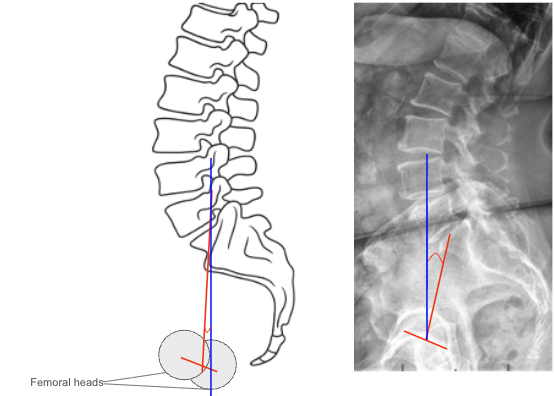

1) Description of Measurement
Pelvic Tilt (PT) is a key spinopelvic parameter that measures the angular relationship between the pelvis and the vertical axis. It quantifies the degree of pelvic retroversion or anteversion, reflecting how the pelvis compensates for sagittal imbalance.
A higher pelvic tilt indicates posterior pelvic rotation (retroversion) — a compensatory mechanism often seen in patients with sagittal malalignment to maintain an upright posture. Conversely, a lower PT reflects anterior rotation (anteversion), typical of a balanced spine.
PT, in combination with Sacral Slope (SS) and Pelvic Incidence (PI), defines pelvic orientation and is critical for assessing sagittal alignment and planning corrective spine surgery.
2) Instructions to Measure
3) Normal vs. Pathologic Ranges
Key Point:
Pelvic Tilt > 25° often indicates significant pelvic compensation secondary to loss of lumbar lordosis or positive sagittal vertical axis (SVA) shift.
4) Important References
Legaye J, Duval-Beaupère G, Hecquet J, Marty C. Pelvic incidence: a fundamental pelvic parameter for three-dimensional regulation of spinal sagittal curves. Eur Spine J. 1998;7(2):99–103.
Vialle R, Levassor N, Rillardon L, Templier A, Skalli W, Guigui P. Radiographic analysis of the sagittal alignment and balance of the spine in asymptomatic subjects. J Bone Joint Surg Am. 2005;87(2):260–267. Le Huec JC, Aunoble S, Philippe L, Nicolas P. Pelvic parameters: origin and significance. Eur Spine J. 2011;20(Suppl 5):564–571.
Barrey C, Roussouly P, Perrin G, Le Huec JC. Sagittal balance disorders in severe degenerative spine: can we identify the compensatory mechanisms? Eur Spine J. 2011;20(Suppl 5):626–633.
Schwab F, Lafage V, Boyce R, Skalli W, Farcy JP. Gravity line analysis in adult volunteers: age-related correlation with spinal and pelvic parameters. Spine. 2006;31(25):E959–E967.
5) Other info....
PT is a dynamic parameter that changes with posture and compensatory mechanisms; it increases with posterior pelvic rotation when the spine loses lordosis.
It serves as a functional indicator of compensation, contrasting with Pelvic Incidence (PI), which is fixed anatomically.
High PT is seen in patients with sagittal imbalance, degenerative lumbar kyphosis, or after inadequate lumbar fusion correction.
Low PT may suggest a hyperlordotic or anteriorly shifted posture.
Target values for balanced sagittal alignment postoperatively often include:
Restoration of appropriate PT contributes to energy-efficient posture and improved functional outcomes.
EOS or stitched long-cassette radiographs are preferred for precise and reproducible pelvic parameter measurement.